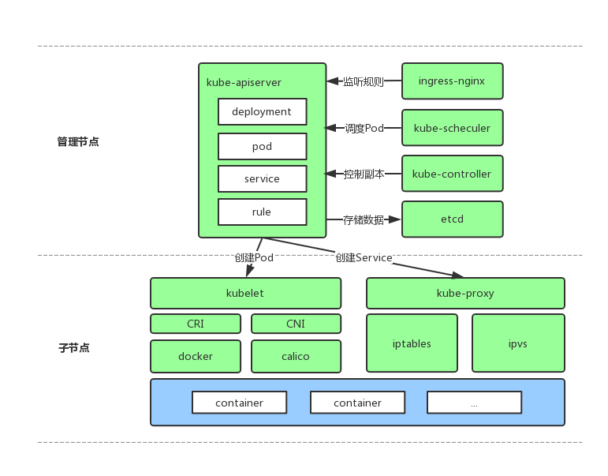

k8s 基本原理#
k8s原理解析#
kubernetes由多个模块组成，一般情况下，除去插件和依赖我们需要部署5个组件和一个静态工具，分别为：kube-apiserver、kube-scheduler、kube-controller-manager、kubelet、kube-proxy、kubectl，我们逐一讲解它们的作用及原理。

kube-apiserver#
一个WEB服务，运行在主节点，它向外提供了很多的REST API，比如：新删改Pod、Service、Deployments，添加节点，提供对REST API的访问权限控制等。
一般运行一个WEB服务都会依赖一个数据库，用来持久化WEB的状态，apiserver也不例外，它的运行需要依赖一个键值对存储服务，用来存储集群中所有信息，如：Pod状态、Node状态、已创建的Service、已创建的Endpoint，创建的Deployments、Statefulsets等，目前(v1.7.2)它只支持ETCD2、ETCD3两种存储服务，所以在部署apiserver前需要先部署一个ETCD集群，且默认地、它与apiserver之间的通信是TLS协议的，所以在apiserver和ETCD的启动参数中都会指定一对证书和密钥，其它所有组件与apiserver进行通信时也都是TLS方式。
kube-scheduler#
一个提供Pod调度功能和调度算法的组件，运行在主节点，它的工作原理是不断地从apiserver监听是否有新创建的Pod，或者说已创建但还没有进行调度的Pod，如果有则将该Pod放入本地队列，然后用指定的算法为集群中所有Node进行打分，将Pod绑定到得分最高的Node上，绑定其实就是将Node的Hostname写入到Pod对象对应的字段中，然后将Pod信息写回到apiserver中，至此调度就算完成了。
scheduler启动时可以指定调度算法，默认的算法名为"default-scheduler"，原理是遍历所有Node，用Node的剩余内存和CPU作为权重，计算出每个Node的分数，如果有多个第一名则随机选其中一个第一名。
kube-controller-menager#
负责管理其它scale-controller，运行在主节点，我们创建Deployments、Statefulsets等资源的时候会有一个相应的scale-controller被创建出来，用来监控该资源的副本数是否与预期数量相同。
kubelet#
做实际部署工作的组件，运行在每个子节点上，原理是所有kubelet不断从apiserver检测已绑定主机但还未部署的Pod，如果这个Pod是绑这定在自己主机上的则将其部署，然后通过REST API将Pod状态更新到apiserver中。除此之外它还要发送心跳给apiserver并汇报自身状态。
kube-proxy#
与kubelet一起被部署在每个子节点上，负责从api-server中监听service和endpoint资源，并在物理机上通过iptables或ipvs为Pod设置端口转发、负载均衡以及从service到Pod的数据转发。
kubectl#
一个k8s客户端，可以部署在任何地方，它的运行需要依赖一个配置文件，用来提供apiserver的地址、端口、证书等信息，以下是一个创建Deployments的示例：
vim spark.yaml
apiVersion: apps/v1beta1
kind: Deployment
metadata:
name: spark-executor
spec:
replicas: 10
template:
metadata:
labels:
app: spark-executor
spec:
containers:
- name: spark-executor
image: registry.io:5000/leap/spark:latest
imagePullPolicy: Always
resources:
requests:
memory: "2G"
cpu: "5"
limits:
memory: "2G"
cpu: "5"
ports:
- containerPort: 8081
name: port-1
env:
- name: DEBUG
value: "__DEBUG"kubectl -n p48-u26-jiajun2 create spark.yml
参考#
- 阅读创建Pod的完整流程文章更有助于理解所有组件的原理和它们之间的协作。